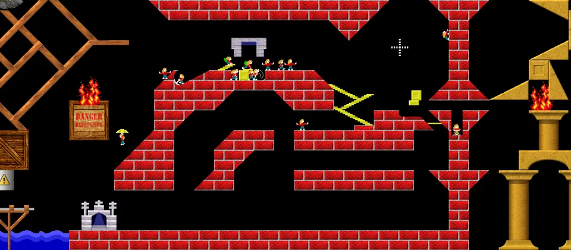

Pause and think
Work out the route before spending skills.
Lix
Lix is a free open-source action-puzzle game inspired by Lemmings.
Download Lix
Basics
Puzzle
Work out the route before spending skills.
One mistake can send everyone into danger.
Bridges are powerful but easy to waste.